Hypothesis Testing
z-test & t-test
INF-604: Data Analysis

Lecturer: Dr. Sothea HAS
Outline
Motivation Example
Probability Review
z-Test
t-test
Examples
Motivation Example
Motivation Example
Newborn baby weights
The weight of new born babies is an important
indicator for the baby’s health.Assumption: Newborn babies who weigh more
than the average weight of newborns are considered healthy.
Tell me, what should I do to check if my newborn brother is healthy?

Motivation Example
Newborn baby weights
- Yes! We should first estimate the average weight of newborn babies.
- A collected sample of size \(n=100\) gives \(\overline{W}=3.5\) kg.
- Can we trust this estimate?
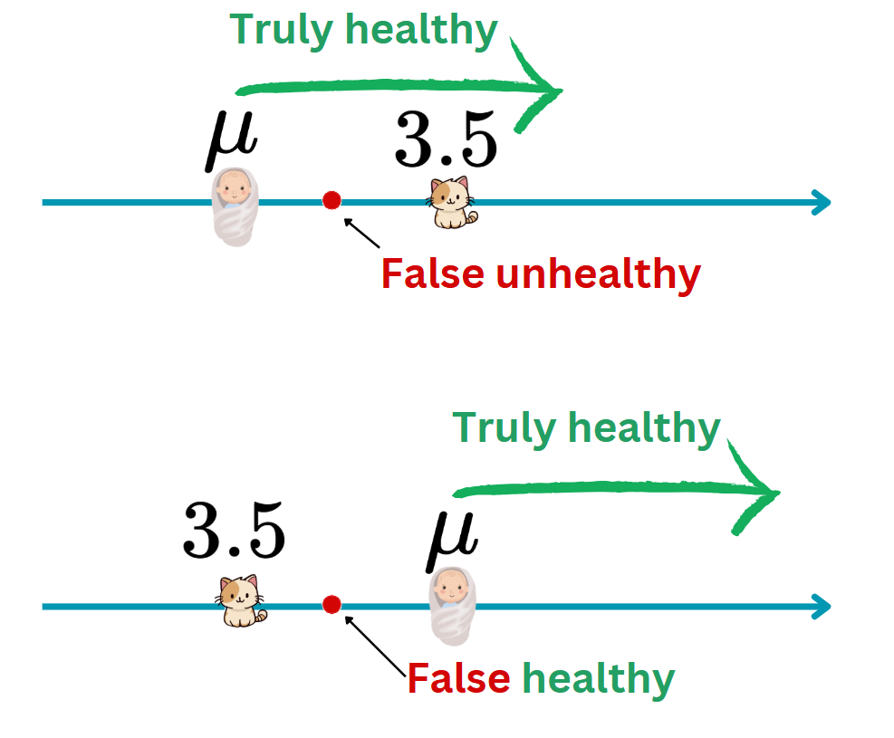
- If \(\mu\) is the true mean of baby weight, there’re 2 problems:
- If \(\mu < 3.5\), healthy babies may be considered unhealthy.
- If \(\mu > 3.5\), unhealthy babies may be considered healthy.
- One of these two mistakes is much much more important than another! Which one (call it Type I Mistake)?
:::
Motivation Example
Hypothesis setting and goal
- In this case, we want to build a decision rule that
- Judges babies based on the estimate \(\overline{W}=3.5\) and
- Controls the risk of committing Type I Mistake to be low.
- Here is the corresponding hypothesis test: \[\begin{cases}\color{red}{H_0}:\mu\geq 3.5\\ \color{green}{H_1}: \mu<3.5,\end{cases}\] where
- \(\color{red}{H_0}:\) Null hypothesis to be rejected with low risk of comitting Type I Mistake.
- \(\color{green}{H_1}:\) Alternative hypothesis to be supported.
Motivation Example
Hypothesis setting and goal (summary)
In this chapter, we aim to test simple hypothesis testing of the form: \[\begin{cases}\color{red}{H_0}:\mu=\color{blue}{\mu_0}\\{ }\\ \color{green}{H_1}: \mu\underset{<}{\overset{>}{\neq}} \color{blue}{\mu_0},\end{cases}\]
For any \(\alpha\in(0,1)\) (significance level, a common choice is \(0.05\)), we aim to design a rule to reject \(\color{red}{H_0}\) and guarantees that \(\mathbb{P}(\color{red}{\text{Reject }H_0}|H_0\text{ is True})\leq \alpha\).
To this goal, we need some tools from Probability!
Q1: I would open a ☕ coffee shop at a location if the sell count is at least \(500\) cups per day. Please design the null and alternative hypotheses.
Probability Review
Probability
Sample space & Events
- Sample space: The set of all the outcomes of a random experiment.
- Events: Subsets of the sample space \(\Omega\).
- Example: If I toss a coin (H and T) three times, then
- Sample space: \(\Omega=\{\) HHH, HHT, HTH, THH, HTT, THT, TTH, TTT \(\}\).
- Events:
- A: “Head came out twice”?
- B: “No head before tails”?
- C: “Number of heads and tails are equal”?
Probability
Sample space & Events
- Sample space: The set of all the outcomes of a random experiment.
- Events: Subsets of the sample space \(\Omega\).
- Example: If I toss a coin (H and T) three times, then
- Sample space: \(\Omega=\{\) HHH, HHT, HTH, THH, HTT, THT, TTH, TTT \(\}\).
- Events:
- A: “Head came out twice”, {HHT, HTH, THH}.
- B: “No head before tails”, {THH, TTH, TTT}.
- C: “Number of heads and tails are equal”, { } = ∅.
Probability
Probability on a fintie set
- Probabilty on a finite set: if \(A\subset \Omega\) then \(\color{blue}{\mathbb{P}(A)=\frac{n(A)}{n(\Omega)}}.\)
- Previous example: Coin toss (H and T) 3 times:
- Sample space: \(n(\Omega)=8\).
- Probability:
- A: “Head came out twice”, \(\mathbb{P}(A)=3/8\).
- B: “No head before tails”, \(\mathbb{P}(B)=3/8\).
- C: “Number of heads and tails are equal”, \(\mathbb{P}(C)=0\).
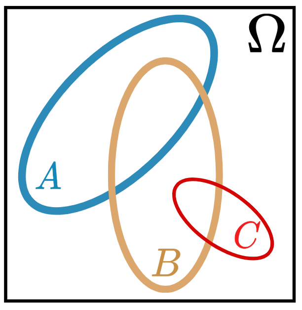
Probability
Axioms of probability
- Probability satisfies the following 3 axioms:
- \(\mathbb{P}(A)\geq 0\) for all \(A\subset \Omega\).
- \(\mathbb{P}(\Omega)=1\).
- If \(A,B\subset\Omega\) are two disjoint events, then \[\mathbb{P}(A\cup B)=\mathbb{P}(A)+\mathbb{P}(B).\]
- Theorem: \(\color{blue}{A,B\subset\Omega: \mathbb{P}(A\cup B)=\mathbb{P}(A)+\mathbb{P}(B)-\mathbb{P}(A\cap B)}.\)
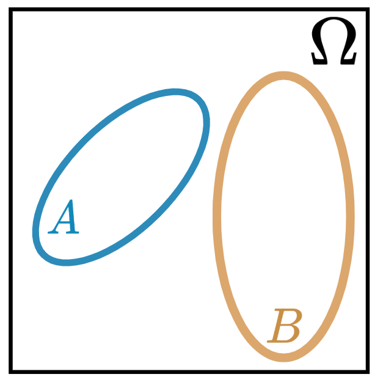 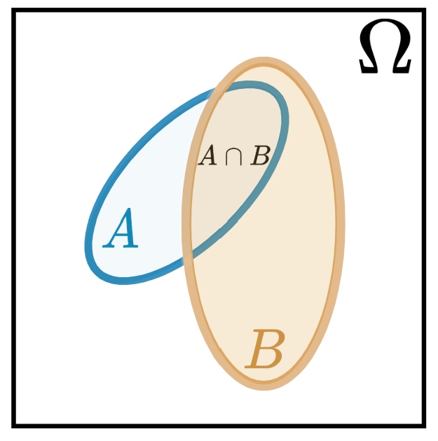
- Our example: \(\mathbb{P}(A\cup B)=\mathbb{P}(A)+\mathbb{P}(B)-\mathbb{P}(A\cap B)=3/8+3/8-1/8=5/8\).
Probability
Conditional Probability & Independency
- If \(A,B\subset \Omega:\) with \(\mathbb{P}(B)>0\), the conditional probability of \(A\) given \(B\) is defined by: \[\color{blue}{\mathbb{P}(A|B)=\frac{\mathbb{P}(A\cap B)}{\mathbb{P}(B)}=\frac{n(A\cap B)}{n(B)}}.\]
- Example: \(\mathbb{P}(A|B)=\frac{1/8}{3/8}=1/3\).
- An event \(A\) is independent of \(B\), denoted by \(A\perp B\) if and only if: \[\color{blue}{\mathbb{P}(A|B)=\mathbb{P}(A)}.\]
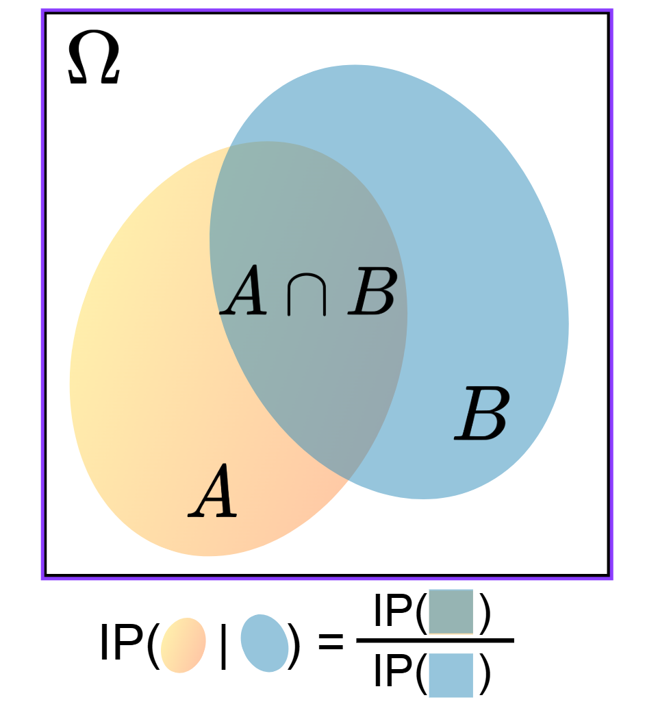
Probability
Discrete Random Variable
- Any function that maps outcomes to real numbers are called Random Variables (RV), often denoted by \(X,Y,Z,...\)
- If \(X\) takes only discrete values (for example, in {0,1,2,3,…}), it’s called a Discrete RV.
- In coin toss example, if \(X=\) number of heads, then \(X\in\{0,1,2,3\}\):
| \(\omega\) | \(X\) |
|---|---|
| TTT | \(0\) |
| HTT, THT, TTH | \(1\) |
| HHT, HTH, HHT | \(2\) |
| HHH | \(3\) |
- Compute probability for DRV: \[p_k=\mathbb{P}(X=k)=\mathbb{P}(\{\omega:X(\omega)=k\}).\]
- Our example: \(\mathbb{P}(X=0)=1/8.\)
- \(\mathbb{P}(X=1)=\mathbb{P}(X=2)=3/8.\)
- \(\mathbb{P}(X=3)=1/8.\)
Probability
Discrete Random Variable
- Any function that maps outcomes to real numbers are called Random Variables (RV), often denoted by \(X,Y,Z,...\)
- If \(X\) takes only discrete values (for example, in {0,1,2,3,…}), it’s called a Discrete RV.
- In coin toss example, if \(X=\) number of heads, then \(X\in\{0,1,2,3\}\):
| \(\omega\) | \(X\) | \(p_k\) |
|---|---|---|
| TTT | \(0\) | \(1/8\) |
| HTT, THT, TTH | \(1\) | \(3/8\) |
| HHT, HTH, HHT | \(2\) | \(3/8\) |
| HHH | \(3\) | \(1/8\) |
- Compute probability for DRV: \[p_k=\mathbb{P}(X=k)=\mathbb{P}(\{\omega:X(\omega)=k\}).\]
- Our example: \(\mathbb{P}(X=0)=1/8.\)
- \(\mathbb{P}(X=1)=\mathbb{P}(X=2)=3/8.\)
- \(\mathbb{P}(X=3)=1/8.\)
Probability
Graph: barplot
| \(\omega\) | \(X\) | \(p_k\) |
|---|---|---|
| TTT | \(0\) | \(1/8\) |
| HTT, THT, TTH | \(1\) | \(3/8\) |
| HHT, HTH, HHT | \(2\) | \(3/8\) |
| HHH | \(3\) | \(1/8\) |
- 🔑 Remark: Qualitative data are often modeled using discrete random variables.
- Ex: Gender, Time of day, Traffic Level,…
Probability
Expectation & variance of DRV
- If \(X\) is a discrete random variable taking values in \(\{x_1,x_2,\dots,x_n\}\)
- The Expectation of \(X\): \[\mu=\mathbb{E}(X)=\sum_{k=1}^{n}x_np_k.\]
- The Variance of \(X\): \[\sigma^2=\mathbb{V}(x)=\sum_{k=1}^np_k(x_k-\mu)^2.\]
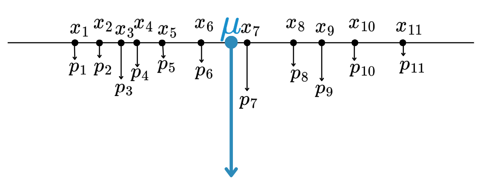
- Our example: \(X\) = Number of heads: \[\begin{align*}\mathbb{E}(X)&=\sum_{k=1}^{n}x_np_k\\ &=0(1/8)+1(3/8)+2(3/8)+3(1/8)=1.5\\ \mathbb{V}(X)&=\sum_{k=1}^{n}p_k(x_n-1.5)^2\\ &=(0-1.5)^2(1/8)+(1-1.5)^2(3/8)+(2-1.5)^2(3/8)\\ &+(3-1.5)^2(1/8)=0.75.\end{align*}\]
Probability
Some well-known DRV: Bernoulli RV
- For modeling a coin toss or any experiments with only two outcomes: sucess (1) or failure (0), happening with probability \(\color{green}{p}\) and \(\color{red}{1-p}\) respectively.
- A Bernoulli RV \(X\) of parameter \(p\) is denoted by \(X\sim{\cal B}(p)\), and has the following Probability Mass Function (PMF):
| \(X=k\) | \(p_k=\mathbb{P}(X=k)\) |
|---|---|
| \(\color{green}{1}\) | \(\color{green}{p}\) |
| \(\color{red}{0}\) | \(\color{red}{1-p}\) |
- Q2: Check that if \(X\) is a Bernoulli RV of success probability \(p\) denoted by \(X\sim{\cal B}(p)\), then:
- \(\mathbb{E}(X)=p\)
- \(\mathbb{V}(X)=p(1-p).\)
- Ex: Data that can be modeled using Bernoulli RV:
- Gender: Male (1), female (0)
- Disease: Positive (1), negative (0)…
Probability
Some well-known DRV: Binomial RV
- For modeling the number of sucesses that occured in \(\color{red}{n}\) times of independent Bernoulli experiments of some parameter \(p\).
- If \(X\) is a Binomial RV denoted by \(X\sim{\cal Bin}(n,p)\) then:
- It takes values \(k\in\{0,1,...,n\}\) with
- PMF: \(p_k=\mathbb{P}(X=k)=C(n,k)p^k(1-p)^{n-k}=\binom{n}{k}p^k(1-p)^{n-k},\) with
- \(n!=n\times(n-1)\times\dots \times 1\), called “\(n\) factorial”, and
- \(C(n,k)=\binom{n}{k}=\frac{n!}{(n-k)!k!}\) the number of ways to choose \(k\) objects at once (no order) from \(n\) objects.
| \(X\) | \(0\) | \(1\) | \(2\) | \(\dots\) | \(n\) |
|---|---|---|---|---|---|
| \(p_k\) | \((1-p)^n\) | \(np(1-p)^{n-1}\) | \(\frac{n(n-1)}{2}p^2(1-p)^{n-2}\) | \(\dots\) | \(p^n\) |
Probability
Barplot of binomial distribution
- Table of distribution:
| X | \(0\) | \(1\) | \(2\) | \(\dots\) | \(n\) |
|---|---|---|---|---|---|
| \(p_k\) | \((1-p)^n\) | \(np(1-p)^{n-1}\) | \(\frac{n(n-1)}{2}p^2(1-p)^{n-2}\) | \(\dots\) | \(p^n\) |
- Q3: Check that if \(X\sim{\cal Bin}(n,p)\), then:
- \(\mathbb{E}(x)=np\)
- \(\mathbb{V}(x)=np(1-p).\)
- Ex: If the prob. of mistakenly transferring money in “$” instead of “៛” in each transaction is \(0.01\), what’s the probability of making \(5\) mistakes in 100 transactions?
Probability
Some well-known DRV: Poisson
- For modeling the number of rare events such as the number of lost luggages at an airport.
- It requires a key parameter \(\lambda\) which is called intensity parameter.
- If \(X\) is a Poisson RV of parameter \(\lambda>0\) denoted by \(X\sim{\cal P}(\lambda)\) if and only if for each \(k=0,1,2,...\), \[p_k=\mathbb{P}(X=k)=e^{-\lambda}\frac{\lambda^{k}}{k!}\quad (e\approx 2.7182...)\]
- We have the table of its distribution:
| X | \(0\) | \(1\) | \(2\) | \(3\) | \(\dots\) |
|---|---|---|---|---|---|
| \(p_k\) | \(e^{-\lambda}\) | \(e^{-\lambda}\lambda\) | \(e^{-\lambda}\frac{\lambda^2}{2!}\) | \(e^{-\lambda}\frac{\lambda^3}{3!}\) | \(\dots\) |
Probability
Barplot of Poisson distribution
| X | \(0\) | \(1\) | \(2\) | \(3\) | \(\dots\) |
|---|---|---|---|---|---|
| \(p_k\) | \(e^{-\lambda}\) | \(e^{-\lambda}\lambda\) | \(e^{-\lambda}\frac{\lambda^2}{2!}\) | \(e^{-\lambda}\frac{\lambda^3}{3!}\) | \(\dots\) |
- Q4: Check that if \(X\sim{\cal P}(\lambda)\), then:
- \(\mathbb{E}(x)=\lambda\)
- \(\mathbb{V}(x)=\lambda.\)
- Poisson variable can be used to model:
- Number of eggs at a given farm/day
- Number of cars sold/day
- Number of mistakes in transections/day…
Probability
Continuous Random Variables
- A RV \(X\) that takes continuous values are called Continuous RV (CRV).
- Ex: Many things can be modeled using CRV:
- Newborn baby weights 👶
- Height of freshmen at AUPP 🫡
- Time that the latest student arrives to my DA I class 😏…
- How would we describe probability of \(\color{red}{X=x\in\mathbb{R}}\)?
- Probability Mass Function (PMF) \[p_k=\mathbb{P}(X=k),k=0,1,...\]
- It describes the probability that \(X\) takes value \(k\).
- Probability Density Function (PDF) \[f_X(x)=\text{A function of variable }x\]
- Roughly, it describes likelihood of \(X\) taking values around \(x\in\mathbb{R}\).
Probability
Continuous Random Variables
- A RV \(X\) that takes continuous values are called Continuous RV (CRV).
- Ex: Many things can be modeled using CRV:
- Newborn baby weights 👶
- Height of freshmen at AUPP 🫡
- Time that the latest student arrives to my DA I class 😏…
- How would we describe probability of \(\color{red}{X=x\in\mathbb{R}}\)?
- Probability Mass Function (PMF)
- Probability Density Function (PDF)
Probability
Properties of PDF
- If \(f_X\) is the PDF of a CRV \(X\) taking values in \(S\subset\mathbb{R}\), then it satisfies:
- Positivity: \(f_X(x)\geq 0\) for all \(x\in S\)
- Total Area Under the Curve is 1: \(\int_{S}f_X(x)dx=1\).
- Ex: Check that \(f(x)=x^2\) is a density of a RV defined on \(S=[0,\sqrt[3]{3}]\).
- We have \(f(x)=x^2>0\) for all \(x\in [0,\sqrt[3]{3}]\).
- Check total area under the curve: \[\begin{align*} \int_{S}f(x)dx&=\int_{0}^{\sqrt[3]{3}}x^2dx\\ &=\frac{1}{3}\left[x^3\right]_0^{\sqrt[3]{3}}\\ &= ((\sqrt[3]{3})^3-0^3)/3=1. \end{align*}\]
Probability
Compute Probability with PDF
- Formula: if \(f_X\) is the density of a random variable \(X\) taking values in \(S\subset\mathbb{R}\), thus for any \(a,b\in S\) with \(a<b\), one has
\[\color{red}{\mathbb{P}(a<X<b)=\mathbb{P}(a\leq X<b)=\mathbb{P}(a<X\leq b)=\mathbb{P}(a\leq X\leq b)=\int_{a}^bf_X(x)dx.}\]
- Remark: If \(X\) is a CRV, then \(\color{red}{\mathbb{P}(X=a)=0}\) for all \(a\in S\).
- Ex: If \(X\) is a RV with PDF \(f(x)=x^2\), taking values in \(S=[0,\sqrt[3]{3}]\). Compute:
- \(\mathbb{P}(0\leq X<\sqrt[3]{3}/2)\)
- \(\mathbb{P}(\sqrt[3]{3}/2\leq X\leq \sqrt[3]{3})\)
Probability
Expectation and variance of CRV
- If \(X\) is a CRV with PDF \(f_X\) then
- Expectation: \(\mu=\mathbb{E}(X)=\int_{S}xf_X(x)dx.\)
- Variance: \[\sigma^2=\mathbb{V}(X)=\mathbb{E}[(X-\mu)^2]=\int_{S}(x-\mu)^2f_X(x)dx.\]
- Example: Check that if \(X\) is a CRV with PDF \(f_X(x)=x^2\) defined on \(S=[0,\sqrt[3]{3}]\), one has
- \(\mathbb{E}(X)=\int_0^{\sqrt[3]{3}}xf_X(x)dx=\frac{3\sqrt[3]{3}}{4}.\)
- \(\mathbb{V}(X)=\frac{3^{5/3}}{5}-\frac{3^{8/3}}{16}.\)
Probability
Normal/Gaussian Random Variable
- For modeling natural measurements such as
- Heights, weights, sizes…
- Measurement errors…
- A RV normal or Gaussian with mean \(\mu\) and variance \(\sigma^2\) is denoted by \(X\sim {\cal N}(\color{green}{\mu}, \color{red}{\sigma^2})\).
- Its PDF is defined for all \(x\in\mathbb{R}\) by \[f_X(x)=\frac{1}{\sqrt{2\pi\sigma^2}}e^{-(x-\color{green}{\mu})^2/(2\color{red}{\sigma^2})}.\]
- We can check that
- \(\mathbb{E}(X)=\color{green}{\mu}\) and \(\mathbb{V}(X)=\color{red}{\sigma^2}.\)
Probability
Normal/Gaussian Random Variable
- Consider our French kid dataset:
| Gender | Age | Height | Weight | |
|---|---|---|---|---|
| 1 | M | 74 | 116 | 18 |
| 2 | M | 69 | 120 | 23 |
| 3 | M | 72 | 121 | 25 |
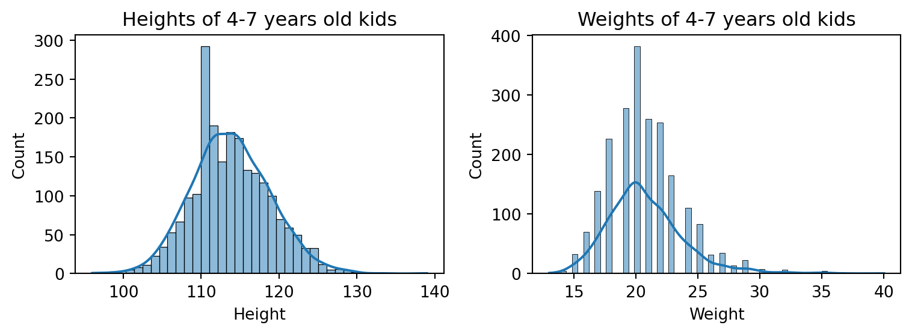
Probability
Standard Normal & Property
Standard Normal & The main property
A normal RV with mean \(\mu=0\) and variance \(\sigma^2=1\), denoted by \(X\sim{\cal N}(0,1)\), is called “Standard Normal Random Variable”.
If \(X_1,\dots, X_n\sim{\cal N}(\color{green}{\mu},\color{red}{\sigma^2})\) are Independent and Identically Distributed (iid) and \(\overline{X}_n=\sum_{i=1}^nX_i/n\) then \[Z=\frac{\overline{X}_n-\color{green}{\mu}}{\color{red}{\sigma}}\sim {\cal N}(0,1).\]
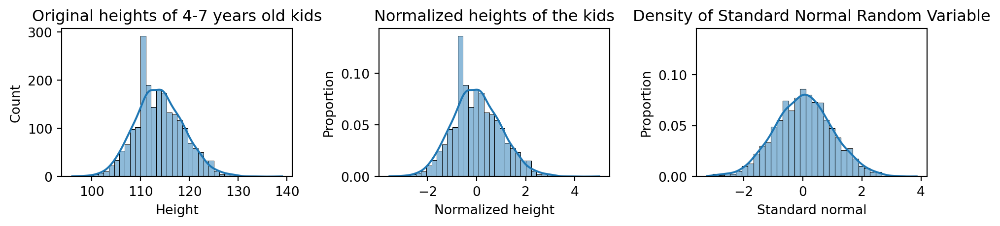
Probability
Standard Normal & Property
Standard Normal & The main property
A normal RV with mean \(\mu=0\) and variance \(\sigma^2=1\), denoted by \(X\sim{\cal N}(0,1)\), is called “Standard Normal Random Variable”.
If \(X_1,\dots, X_n\sim{\cal N}(\color{green}{\mu},\color{red}{\sigma^2})\) are Independent and Identically Distributed (iid) and \(\overline{X}_n=\sum_{i=1}^nX_i/n\) then \[Z=\frac{\overline{X}_n-\color{green}{\mu}}{\color{red}{\sigma}}\sim {\cal N}(0,1).\]
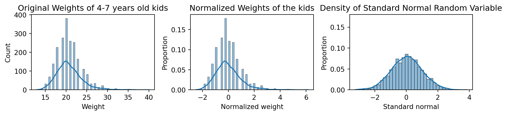
Probability
Standard Normal & Property
- If \(Z\sim{\cal N}(0,1)\), then we know its range very well!
Probability
Standard Normal & Property
- No one can compute \(\mathbb{P}(a\leq Z\leq b)\) precisely!
- People use the following standard normal \(z\) table:
Probability
Challenge
If \(Z\sim{\cal N}(0,1)\), use table to compute:
- \(\mathbb{P}(Z\leq 0)\)
- \(\mathbb{P}(Z\leq -1)\)
- \(\mathbb{P}(Z\leq 1.37)\)
- \(\mathbb{P}(Z\leq 2.15)\)
- \(\mathbb{P}(0.25< Z\leq 1.27)\)
- \(\mathbb{P}(-1.23 \leq Z < 0.14)\)
- \(\mathbb{P}(Z\geq 2.71)\)
- \(\mathbb{P}(Z>1.96)\)
- \(\mathbb{P}(Z<-0.7)\)
- \(\mathbb{P}(|Z|\geq 1.96)\)
- \(\mathbb{P}(|Z|> 2.5)\)
- \(\mathbb{P}(|Z|< 1.37)\)
- \(\mathbb{P}(|Z|\leq 2.15)\)
- Find \(z_0\) such that \(\mathbb{P}(Z< z_0)=0.9\)
- Find \(z_0\) such that \(\mathbb{P}(Z\geq z_0)=0.314\)
- Find \(z_0\) such that \(\mathbb{P}(|Z|\geq z_0)=0.05\)
- Find \(z_0\) such that \(\mathbb{P}(|Z|\leq z_0)=0.75\)
- Find \(z_0\) such that \(\mathbb{P}(|Z|\leq z_0)=0\).

And now, we have enough probability tools!
z-Test
z-Test
Recall
- Suppose a sample (weights): \(X_1,X_2,\dots, X_n\in\mathbb{R}\) with \(\overline{x}_n=\color{blue}{\mu_0}\).
- We would like to test the following hypothesis: \[(S_>):\begin{cases}H_0: \text{The true mean }\mu=\color{blue}{\mu_0}\\ H_1: \text{The true mean }\mu>\color{blue}{\mu_0}. \end{cases}\]
- In other words, we want to reject \(H_0\) with a small risk of committing Type I Error (Reject \(H_0\) while it’s true).
- This can be done by relying on two things:
- The distribution of the original data
- The normal standard distribution.
z-Test
Z-statistics and Rejection Region
Z-test statistics & Rejection Region
- Key assumption: Assume that \(X_1,\dots,X_n\sim{\cal N}(\mu, \sigma^2)\) are iid with an unknown mean \(\mu\) and a known standard deviation \(\sigma>0\).
- If \(H_0\) is True, then for any \(\color{red}{\alpha}\in (0,1)\) we have
- The quantity: \(Z=\frac{\overline{X}_n-\color{blue}{\mu_0}}{\sigma}\sim{\cal N}(0,1)\) “z-value”.
- If we choose \(\color{red}{z_{\alpha}}\) such that \(\mathbb{P}(Z>\color{red}{z_{\alpha}})=\color{red}{\alpha}\), then “if we reject \(H_0\) whenever \(Z>\color{red}{z_{\alpha}}\), it’s guaranteed that” \[\mathbb{P}(\color{red}{\text{Type I Error}})=\mathbb{P}(\color{red}{\text{Reject }}H_0|H_0\color{blue}{\text{ is True}})=\color{red}{\alpha}.\]
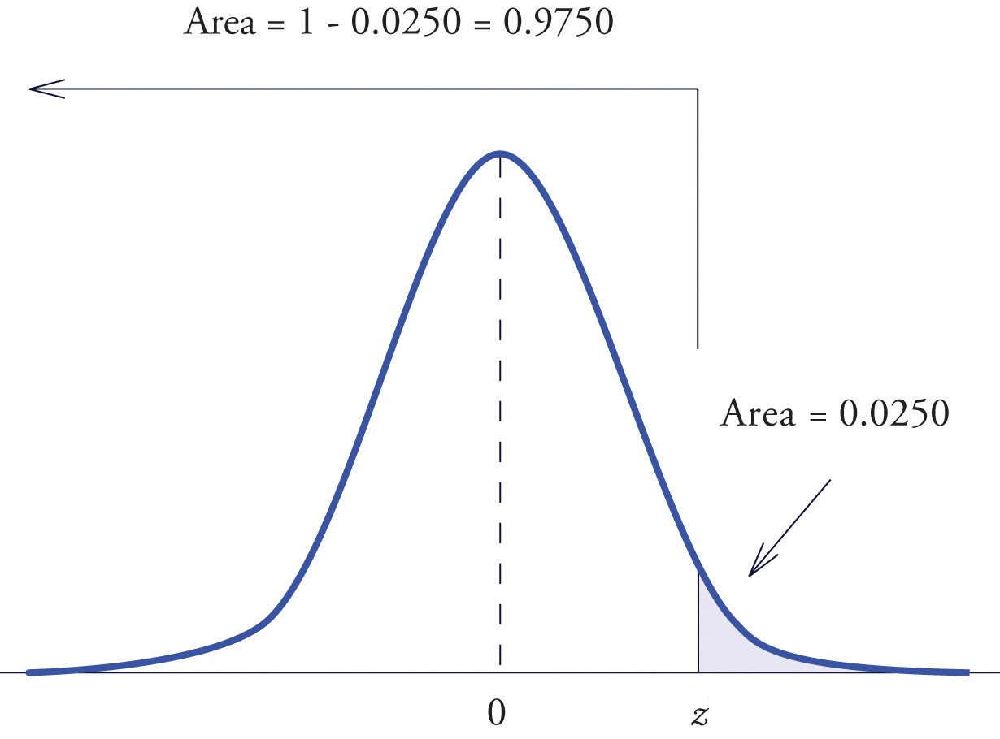
- The set of \(\color{red}{R(\alpha)=\{z: z>z_{\alpha}\}}\) is called Rejection Region at level \(\alpha\), meaning that if \(Z\in\color{red}{R(\alpha)}\), we can reject \(H_0\) with confidence level \(1-\color{red}{\alpha}\).
z-Test
Z-test Summary for (\(S_>\))
Z-test Summary (\(S_>\))
- Suppose the sample: \(X_1,\dots,X_n\sim{\cal N}(\mu,\sigma^2)\) with known \(\sigma^2\) and unknown \(\mu\).
- For some \(\color{blue}{\mu_0}\) given, to test \(H_0:\mu={\mu_0}\) against \(H_1:\mu>\color{blue}{\mu_0}\) we do:
- Compute \(Z=\frac{\overline{X}_n-\mu_0}{\sigma}\)
- For a given significance level \(\color{red}{\alpha}\), compute \(\color{red}{z_\alpha}\) such that \(\mathbb{P}(Z>\color{red}{z_\alpha})=\color{red}{\alpha}\).
- Decision:
- If \(Z>\color{red}{z_\alpha}\), we reject \(H_0\) with confidence level \(1-\color{red}{\alpha}\).
- If \(Z\leq \color{red}{z_\alpha}\), we cannot reject \(H_0\) due to insufficient evidence.
z-Test
Z-test Summary for (\(S_<\))
Z-test Summary (\(S_<\))
- Suppose the sample: \(X_1,\dots,X_n\sim{\cal N}(\mu,\sigma^2)\) with known \(\sigma^2\) and unknown \(\mu\).
- For some \(\color{blue}{\mu_0}\) given, to test \(H_0:\mu={\mu_0}\) against \(H_1:\mu<\color{blue}{\mu_0}\) we do:
- Compute \(Z=\frac{\overline{X}_n-\mu_0}{\sigma}\)
- For a given significance level \(\color{red}{\alpha}\), compute \(\color{red}{z_\alpha}\) such that \(\mathbb{P}(Z<\color{red}{z_\alpha})=\color{red}{\alpha}\).
- Decision:
- If \(Z<\color{red}{z_\alpha}\), we reject \(H_0\) with confidence level \(1-\color{red}{\alpha}\).
- If \(Z\geq \color{red}{z_\alpha}\), we cannot reject \(H_0\) due to insufficient evidence.
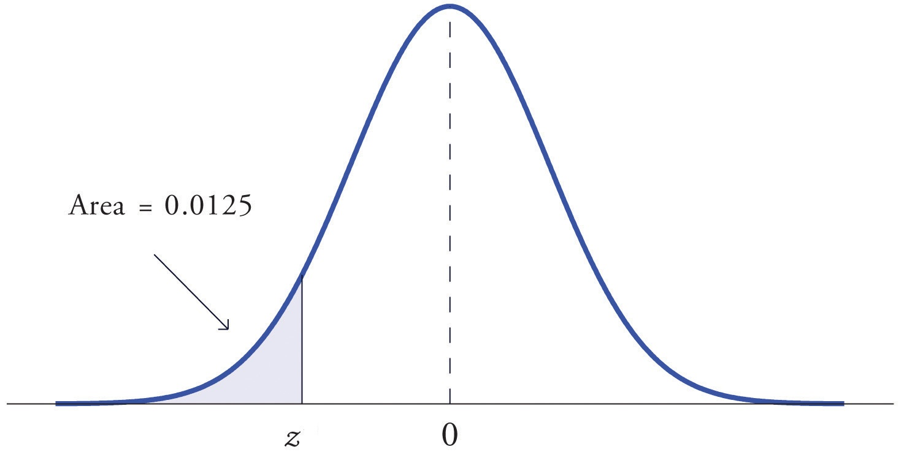
- Ex: (Baby weight) Test \(H_0:\mu=3.75\) against \(H_1:\mu<3.75\) at \(\alpha=0.05\) knowing that \(\sigma=0.5\) kg and \(\overline{W}=3.5\) (assuming that baby weights are normally distributed). How about when \(\overline{W}=2.9\) kg.
z-Test
Z-test Summary for (\(S_\neq\))
Z-test Summary (\(S_\neq\))
- Suppose the sample: \(X_1,\dots,X_n\sim{\cal N}(\mu,\sigma^2)\) with known \(\sigma^2\) and unknown \(\mu\).
- For some \(\color{blue}{\mu_0}\) given, to test \(H_0:\mu={\mu_0}\) against \(H_1:\mu\neq\color{blue}{\mu_0}\) we do:
- Compute \(Z=\frac{\overline{X}_n-\mu_0}{\sigma}\)
- For a given significance level \(\color{red}{\alpha}\), compute \(\color{red}{z_{\alpha/2}}\) such that \(\mathbb{P}(|Z|>\color{red}{z_{\alpha/2}})=\color{red}{\alpha}\).
- Decision:
- If \(|Z|>\color{red}{z_{\alpha/2}}\), we reject \(H_0\) with confidence level \(1-\color{red}{\alpha}\).
- If \(|Z|\geq \color{red}{z_{\alpha/2}}\), we cannot reject \(H_0\) due to insufficient evidence.
t-Test
t-Test
🥳 Yeahhhh….
Let’s Party… 🥂